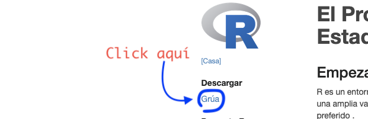
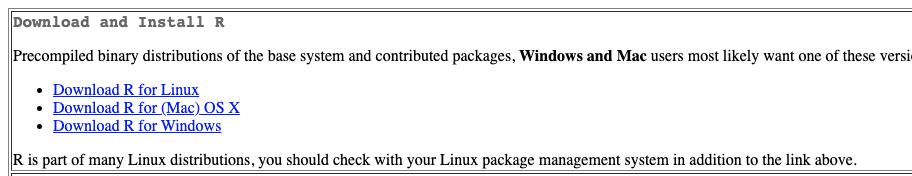
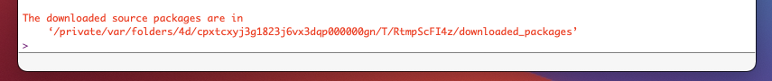
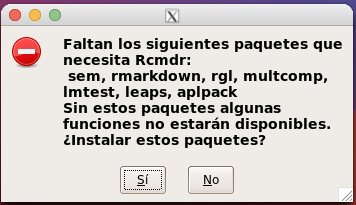
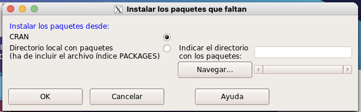

Para instalar R basta con ingresar al sitio oficial y descargar la versión adecuada para el sistema operativo que se utiliza(Windos, MacOSx o Linux). Para hacer esto:
Hacer clic en donde dice CRAN, en la parte izquierda de la página. Si tienes activado el Traductor de Google, en logar de CRAN, aparece GRÚA, es lo mismo, haz click ahí.
**Haz click en CRAN o GRÚ*A**

En la página que se abre, aparecen del lado izquierdo en color azul (como hipervínculos), los distintos repositorios o servidores espejo de donde puede descargqrse el paquete instalador de R, haz click en cualquiera. Si lo prefieres puedes buscar el que corresponde a tu país, aunque en realidad al denominarse espajo los servidores guardan la misma versión del instalador, por eso puedes acceder a cualquiera. En el caso de México existen dos servidores espejo, el del ITAM y el del Colegio de Posgraduados de Chapingo.
En la página que se abre hay una sección como la de la siguiente imagen, haz clic donde dice “Download for…”, donde los tres puntos suspencivos indican el sistema operativo que estás utilizando.
Click sonre la opción para tu sistema operativo

Al hacer click encontrarás instrucciones y links para la descarga del paquete. Paara mejor referencia ve la siguiente tabla:
Sistema operativo | Información de referencia Windows | En este caso la descarga se puede hacer desde el primer párrafo que dice *"Binaries for base distribution. This is what you want to install R for the first time. | MacOSx | En este caso debe buscarse un link que dice “R-4.0.3.pkg” Linux | En este caso se aportan instrucciones para instalar el paquete desde la propia distribución de Linux que se está utilizando.|
Instalar R en MS WINDOWS
A continuación se presenta un video colgado en el servidor de UYoutube donde se indica este proceso de instalación. Sólo basta observar hasta el minuto 2:06 ya que el resto de video trata de la instalación de RStudio, que es otra interfaz gráfica, pero para programación estadística, y no es parte de este curso-taller, pero vale como información adicional.
Instalación de R en MacOSX
Para observar este procedimiento presento el siguiente video de mi propio proceso de instalación.
Después de instalar R
El paso siguiente es sólo para la instalación de R en equios con sistema operativo MacOSX.
Bajo la sección de “Descarga rápida” localiza el archivo XQuartz-2.7.11.dmg (o similar), y haz click sobre él para descargarlo. una ventana como la de abajo, haz click sobre el archivo XQuartz ubicado ahí.
HAZ DOBLE CLICK EN EL ARCHIVO XQUARTZ.PKG
Al hacer doble click sobre el archivo XQuartz.pkg, se abrirá el asistente de instalación como sigue en el siguiente video (sólo se capturaron las imágenes del asistente, no el audo).
Instalación de R-Commander
Se requiere tener ya instalado el paquete R, ya sea que se vaya a usar en Windows, MacOsx o Linux.
Acciones
Iniciar R.
Se puede utilizar el manú “Paquetes y datos” de la barra de menús en la parte superior de la ventana de R, aunque es nombre del menú puede cambiar según el sistema operativo que se esté usando (windows, manosx o linux). Sin embargo la mejor opción es teclear directamente en la consola lo siguiente:
> install.packages("Rcmndr")
Después de un rato, les preguntará si desean descargar cierta cantidad de paquetes a lo que deben responder que si, escribiendo yes y presionando la tecla ENTER. Esperen mientras se descarga e instala todo. Esto solo se realiza una vez, al utilizar por primera vez.
> Do you want to install from sources the package which needs compilation? (Yes/no/cancel) yes
Cuando termine de instalar, saldrá algo así como:

Para iniciar R-Commander, sólo se teclea en la terminal library("Rcmdr"). La primera vez que esto se hace para abrir el R-commander, se solicitará instalar paquetes adicionales. Sale un cuadro como este y es necesario hacer clic en “OK” o “ACEPTAR”, según sea el caso.
Solicitud de instalación de paquetes adicionales

Saldrá un cuadro para confirmar la fuente desde donde se descargarán o instalarán los paquetes, de “OK”.
Confirmación de descarga e instalación de paquetes

Espera un poco y al terminar se abrirá la ventana de interface de R-Commander, la interfaz gráfica de usuario para R, misma que será la base para el resto del curso.La ventana es como esta.